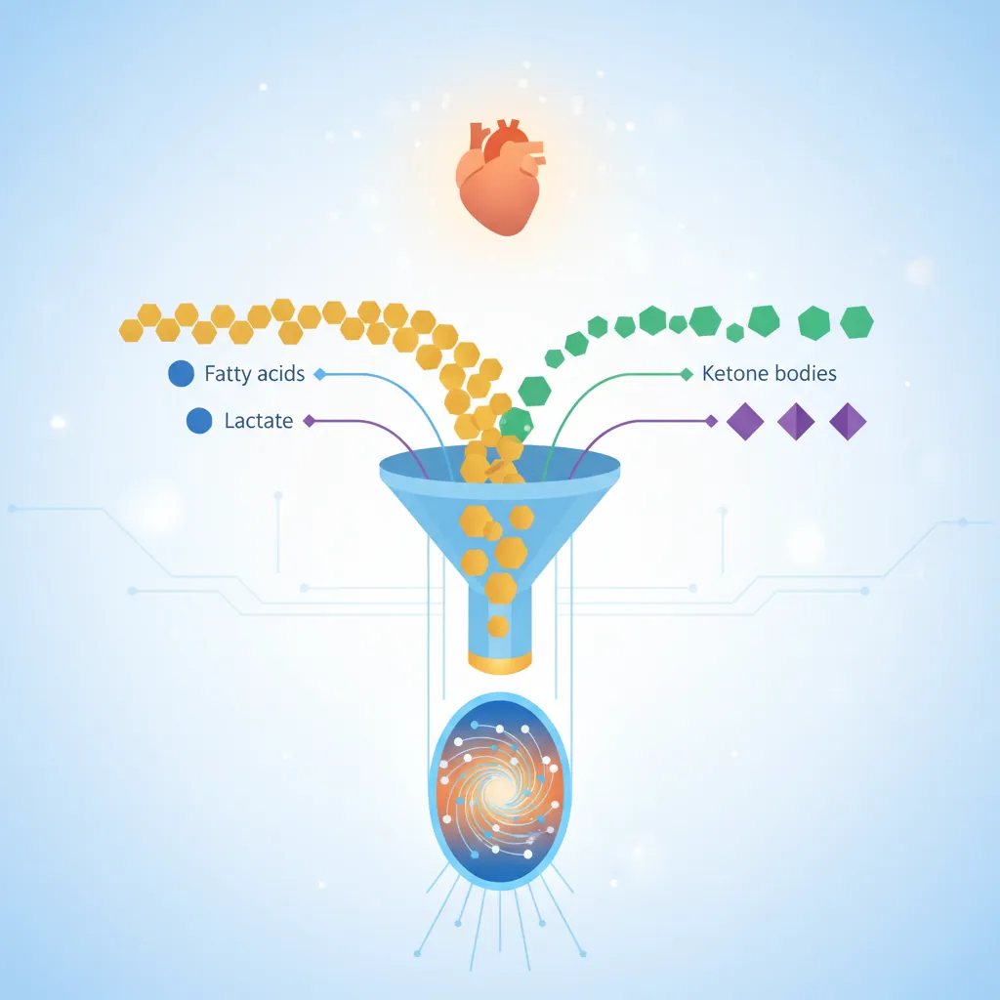
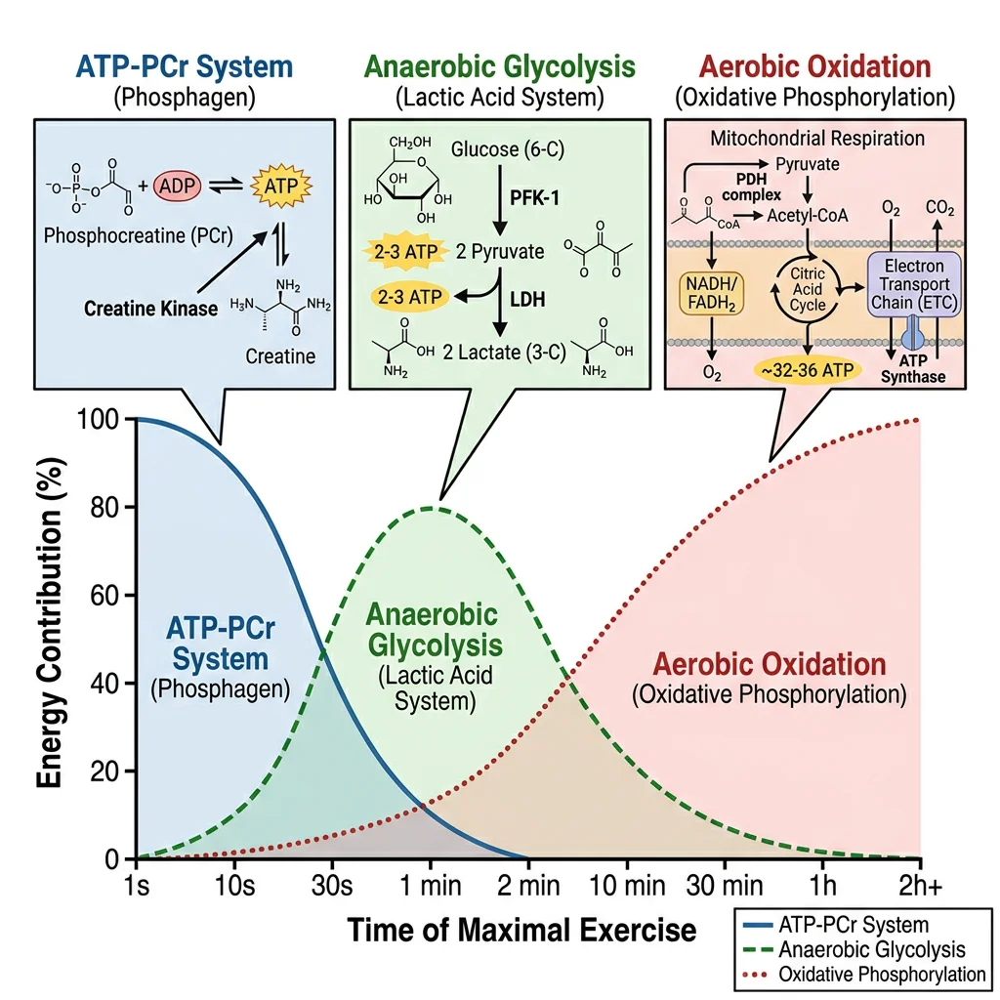
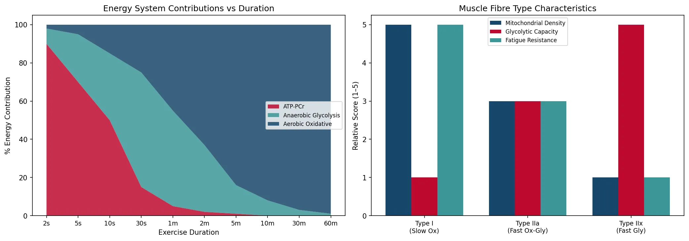
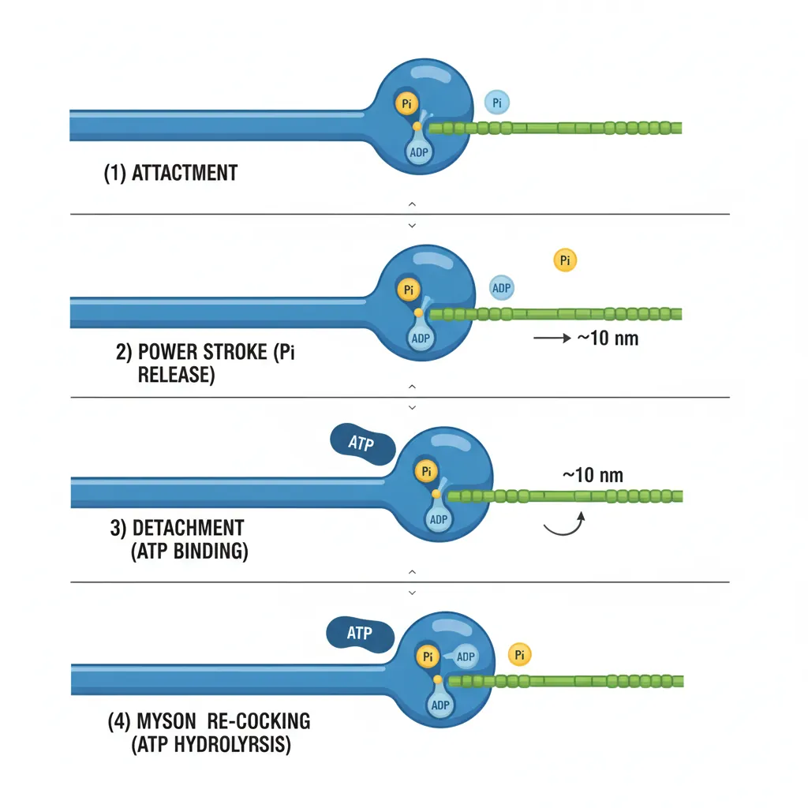
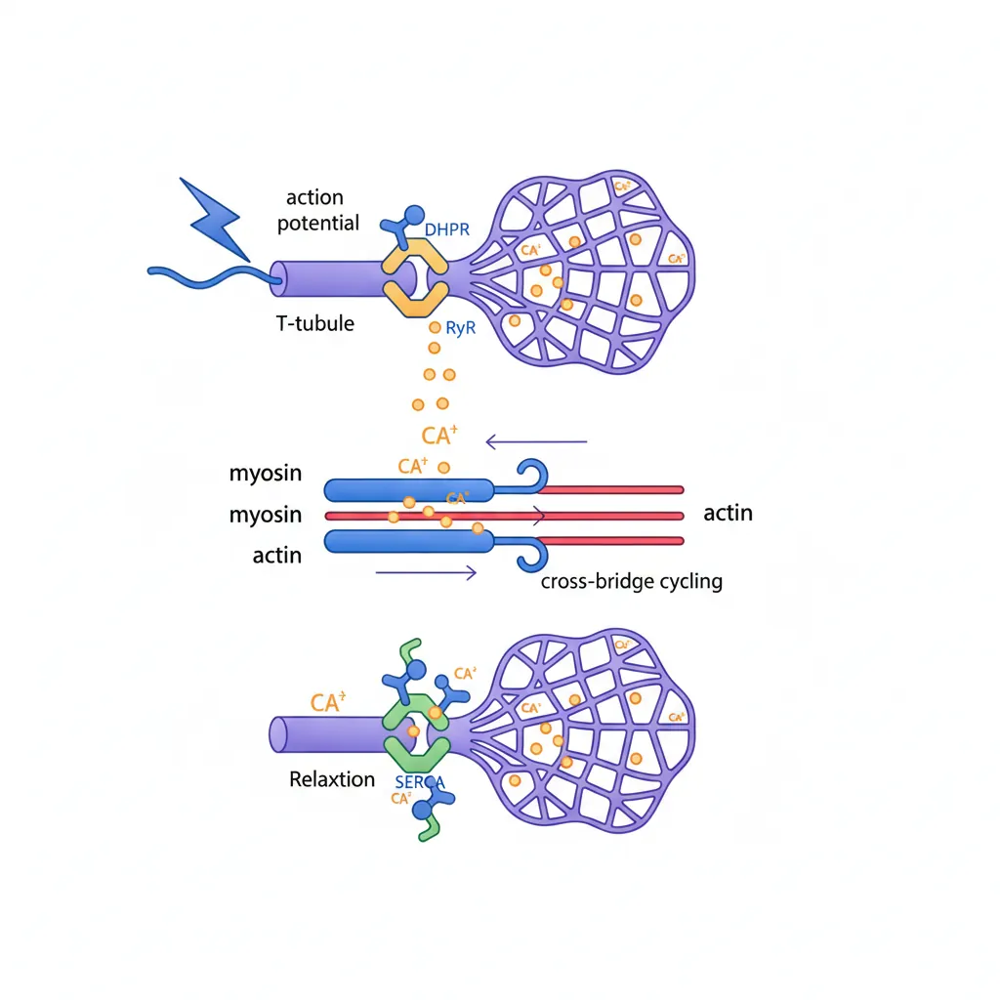
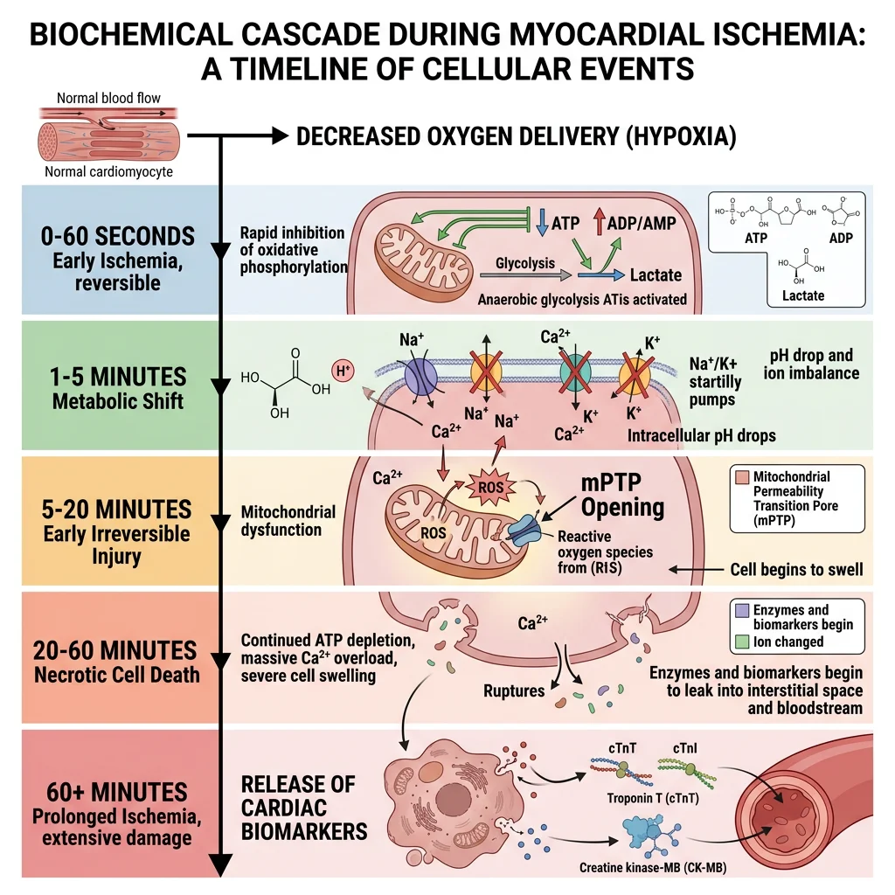
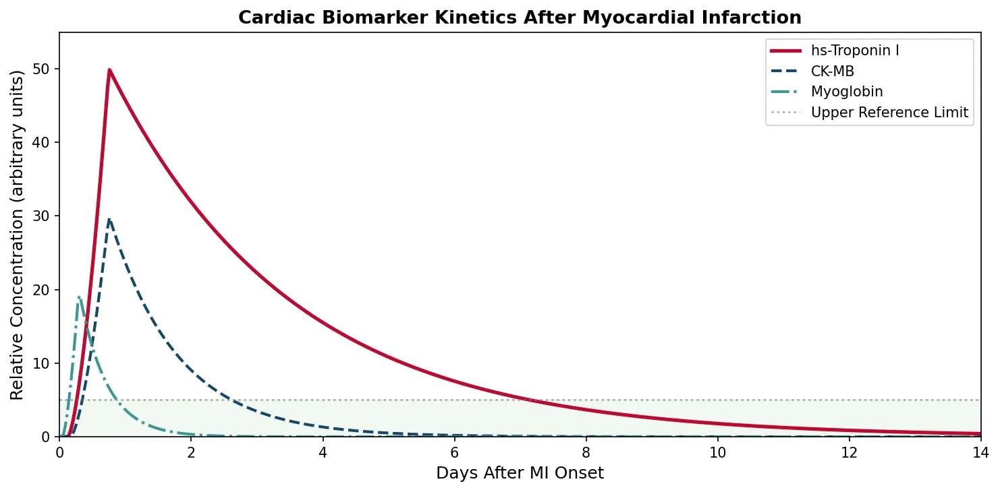
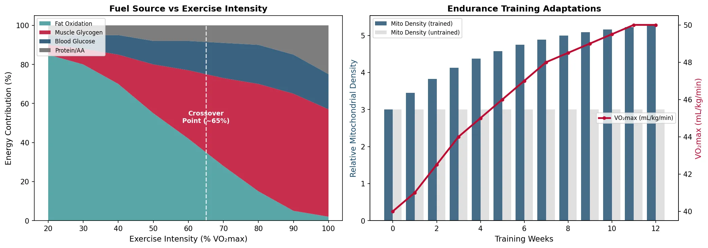

Biochemistry Mastery
Biological Chemistry Fundamentals
Atoms, bonds, functional groups, thermodynamicsWater, pH & Biological Buffers
Water polarity, pH, Henderson-Hasselbalch, blood buffersAmino Acids & Protein Structure
Amino acid classes, peptide bonds, protein foldingEnzymes & Catalysis
Kinetics, Michaelis-Menten, inhibition, regulationCarbohydrates & Lipids
Sugars, glycogen, fatty acids, cholesterol, membranesMetabolism & Bioenergetics
ATP, glycolysis, gluconeogenesis, redox carriersCitric Acid Cycle & Oxidative Phosphorylation
Acetyl-CoA, ETC, ATP synthase, oxygen dependenceSignal Transduction & Cell Communication
GPCRs, kinases, calcium, hormone cascadesNucleic Acids & Gene Expression
DNA, replication, transcription, translation, epigeneticsBrain & Nervous System Biochemistry
Neurotransmitters, ion gradients, myelin, neurodegenerationHeart & Muscle Biochemistry
Cardiac metabolism, actin-myosin, energy systemsLiver Biochemistry
Glucose homeostasis, detox, urea cycle, bileKidney Biochemistry & Acid-Base
pH regulation, ion transport, hormonal functionsEndocrine System Biochemistry
Hormone classes, signaling, glucose & stress controlDigestive System Biochemistry
Gastric acid, enzymes, bile, absorption, microbiomeImmune System Biochemistry
Antibodies, cytokines, complement, oxidative burstAdipose Tissue & Energy Balance
Triglycerides, lipolysis, leptin, obesityTissue-Specific Metabolism
Fed vs fasting, organ fuel selection, starvationMolecular Basis of Disease
Diabetes, cancer metabolism, neurodegenerationClinical Biochemistry & Diagnostics
Blood tests, liver/kidney markers, lipid panelsCardiac Metabolism
The heart is the most metabolically active organ in the body. Beating roughly 100,000 times per day, it consumes approximately 6 kg of ATP daily — more than 20 times its own weight. Yet the heart stores only enough ATP for about 10 seconds of contraction, making continuous oxidative phosphorylation absolutely essential for survival.

The Heart's Fuel Hierarchy
- Fatty acids (60–70%): Primary fuel at rest via β-oxidation — long-chain fatty acids enter mitochondria through the carnitine palmitoyltransferase (CPT) shuttle (CPT-I on outer membrane, CPT-II on inner membrane)
- Glucose (20–30%): Taken up via GLUT4 (insulin-sensitive) and GLUT1; enters glycolysis then feeds pyruvate into TCA cycle
- Lactate (10–15%): The heart is a net lactate consumer — it imports lactate via MCT1 transporters, converts it to pyruvate via LDH, and oxidises it for energy
- Ketone bodies: β-hydroxybutyrate becomes significant during fasting/diabetes; enters TCA via succinyl-CoA transferase
- Amino acids: Minor contribution (<5%), primarily branched-chain amino acids (BCAAs)
Why fatty acids? Think of cardiomyocytes as diesel engines — they prefer the fuel with the highest energy density. One molecule of palmitate (C16:0) yields ~106 ATP via complete β-oxidation, compared to ~30–32 ATP from one glucose molecule. Since the heart cannot rest, it needs the most efficient fuel available.
Randle Cycle: Fatty Acid–Glucose Competition
The Randle cycle (glucose–fatty acid cycle) explains how these two fuels compete. When fatty acid oxidation rates are high:
- Acetyl-CoA accumulates → inhibits pyruvate dehydrogenase (PDH)
- Citrate accumulates → inhibits phosphofructokinase-1 (PFK-1)
- Glucose-6-phosphate builds up → inhibits hexokinase
- Net result: glucose oxidation decreases when fatty acids are abundant
This reciprocal regulation ensures metabolic flexibility but becomes pathological in diabetic hearts where fatty acid oxidation is permanently dominant.
| Feature | Cardiac Muscle | Skeletal Muscle |
|---|---|---|
| Primary fuel at rest | Fatty acids (60–70%) | Fatty acids (~60%) |
| Lactate handling | Net consumer (imports via MCT1) | Net producer during high-intensity exercise |
| Glycogen stores | Small (limited reserve) | Large (300–500 g total) |
| Mitochondrial volume | ~35% of cell volume | ~5–12% of cell volume |
| Fatigue tolerance | Cannot fatigue (continuous) | Fatigues during sustained work |
| Metabolic rate | ~6 kg ATP/day (70 kg person) | Variable; up to 100× resting during sprint |
Glucose Switching Under Stress
When the heart faces oxygen limitation (ischemia, heart failure), it must rapidly shift from fatty acid to glucose oxidation. This metabolic switch is critical because:
The Oxygen Cost Problem
Fatty acid oxidation requires more oxygen per ATP produced than glucose. The P/O ratio (ATP per oxygen atom consumed) is:
- Glucose: P/O ≈ 2.58 → more oxygen-efficient
- Palmitate: P/O ≈ 2.33 → consumes ~12% more O₂ per ATP
During ischemia, when oxygen is scarce, the heart must switch to glucose to survive. Failure to switch (as in diabetic cardiomyopathy) worsens ischemic damage.
Key regulatory mechanisms driving the glucose switch:
- AMPK activation: Falling ATP/AMP ratio activates AMP-activated protein kinase → stimulates GLUT4 translocation and glucose uptake
- Malonyl-CoA decrease: AMPK phosphorylates acetyl-CoA carboxylase (ACC) → reduced malonyl-CoA → relieves CPT-I inhibition (paradoxically can increase FA oxidation short-term)
- HIF-1α induction: Hypoxia-inducible factor 1α upregulates glycolytic enzymes and glucose transporters
- PDH complex activation: Decreasing acetyl-CoA from β-oxidation relieves PDH inhibition → pyruvate oxidation increases
Metabolic Modulators: Shifting the Heart's Fuel
Context: Since forcing the heart to use glucose is more oxygen-efficient, pharmaceutical metabolic modulators have been developed to treat angina and heart failure.
Trimetazidine inhibits 3-ketoacyl-CoA thiolase (the last enzyme of β-oxidation), shifting metabolism toward glucose. Clinical trials showed improved exercise tolerance and reduced angina episodes in patients with stable coronary artery disease.
Ranolazine partially inhibits fatty acid oxidation and also blocks late sodium current, reducing calcium overload. It is FDA-approved for chronic angina.
Perhexiline inhibits CPT-I and CPT-II, blocking fatty acid entry into mitochondria entirely. Highly effective but requires therapeutic drug monitoring due to narrow therapeutic index (hepatotoxicity and neuropathy risk).
Significance: These drugs demonstrate that metabolic reprogramming is a viable therapeutic strategy — treating heart disease by changing the fuel, not just the plumbing.
Skeletal Muscle Energy Systems
Skeletal muscle is the most adaptable tissue in the body — it can increase energy expenditure 100-fold within seconds during maximal exercise. Unlike the heart, which relies on continuous oxidative metabolism, skeletal muscle uses three overlapping energy systems that activate in sequence based on exercise intensity and duration.

Energy System Overview
Think of the three energy systems as gears in a car:
- 1st gear (ATP-PCr): Explosive start — maximum power, depletes in ~10 seconds
- 2nd gear (Anaerobic glycolysis): Sustained high intensity — moderate power for 30 s to 2 min
- 3rd gear (Aerobic oxidative): Endurance cruising — lower power but virtually unlimited duration
All three systems are always active — the question is which one dominates at any given moment.
ATP-PCr System (Phosphagen System)
The phosphocreatine (PCr) system is the fastest energy system — it can regenerate ATP at rates faster than any other pathway, making it essential for explosive movements like sprinting, jumping, and Olympic weightlifting.
The key reaction is catalysed by creatine kinase (CK):
Creatine Kinase Reaction
PCr + ADP → Creatine + ATP
- Speed: ATP regenerated in <1 second — no oxygen needed, no metabolic intermediates
- Capacity: Muscle stores ~80 mmol/kg PCr — sufficient for ~8–10 seconds of maximal effort
- Recovery: PCr resynthesis requires ~3–5 minutes of rest (powered by oxidative ATP)
- CK isoenzymes: CK-MM (skeletal muscle), CK-MB (cardiac), CK-BB (brain) — CK-MB elevation is a biomarker for myocardial infarction
Creatine supplementation is the most well-researched ergogenic aid in sports nutrition. Loading doses (20 g/day × 5 days) followed by maintenance (3–5 g/day) increase intramuscular PCr stores by 20–40%, improving performance in repeated short-burst activities. Creatine is synthesised endogenously from glycine, arginine, and methionine in the liver and kidneys.
Anaerobic Glycolysis
When PCr stores are depleted and the effort continues at high intensity, anaerobic glycolysis becomes the dominant ATP source. This pathway converts glucose (from blood or muscle glycogen) to lactate, generating 2 ATP per glucose without requiring oxygen.
| Parameter | Anaerobic Glycolysis Details |
|---|---|
| Rate-limiting enzyme | Phosphofructokinase-1 (PFK-1) — activated by AMP, ADP, Pi; inhibited by ATP, citrate, H⁺ |
| End product | Lactate (via lactate dehydrogenase, LDH) — regenerates NAD⁺ to sustain glycolysis |
| ATP yield | 2 ATP/glucose (3 ATP/glycosyl unit from glycogen, since phosphorolysis saves 1 ATP) |
| Duration dominance | ~30 seconds to 2 minutes of maximal effort |
| Limiting factor | Hydrogen ion (H⁺) accumulation → intracellular pH drops from 7.0 to ~6.5 → inhibits PFK-1 and impairs Ca²⁺ release |
The Lactate Myth — Debunked
Lactate is NOT a waste product that causes muscle soreness. This misconception persisted for decades. Modern biochemistry shows:
- Lactate is a fuel: The heart, brain, and resting muscles actively consume lactate via MCT transporters
- Cori cycle: Muscle lactate → blood → liver → gluconeogenesis → blood glucose → muscle (inter-organ recycling)
- Intracellular shuttle: Lactate moves between glycolytic (cytoplasmic) and oxidative (mitochondrial) compartments within the same cell
- Delayed-onset muscle soreness (DOMS) is caused by mechanical damage and inflammation, NOT lactate accumulation
Aerobic Oxidative System
For exercise lasting longer than ~2 minutes, the aerobic oxidative system becomes the dominant ATP supplier. This system integrates glycolysis, β-oxidation, the TCA cycle, and oxidative phosphorylation to generate large amounts of ATP — but at a slower rate than anaerobic pathways.
Aerobic ATP Yields by Substrate
- Glucose (aerobic): ~30–32 ATP/molecule — via glycolysis → PDH → TCA → ETC
- Glycogen: ~31–33 ATP/glycosyl unit (saves 1 ATP from phosphorolysis)
- Palmitate (C16): ~106 ATP — 7 β-oxidation cycles → 8 acetyl-CoA → TCA → ETC
- VO₂max is the gold-standard measure of aerobic capacity — the maximum rate of O₂ consumption
- Crossover concept: As exercise intensity increases, the fuel mix shifts from fatty acids toward carbohydrates (crossover at ~65% VO₂max)
| Muscle Fibre Type | Primary Metabolism | Characteristics | Activities |
|---|---|---|---|
| Type I (Slow Oxidative) | Aerobic (fatty acids + glucose) | High mitochondria, myoglobin (red), fatigue-resistant | Marathon, cycling, posture |
| Type IIa (Fast Oxidative-Glycolytic) | Mixed aerobic/anaerobic | Moderate mitochondria, intermediate fatigue resistance | Middle-distance, swimming |
| Type IIx (Fast Glycolytic) | Anaerobic (glycolysis + PCr) | Low mitochondria, pale (white), fatigues quickly | Sprinting, jumping, powerlifting |
import numpy as np
import matplotlib.pyplot as plt
# Energy system contribution vs exercise duration
duration_seconds = np.array([2, 5, 10, 30, 60, 120, 300, 600, 1800, 3600])
duration_labels = ['2s', '5s', '10s', '30s', '1m', '2m', '5m', '10m', '30m', '60m']
# Approximate % contribution of each system
atp_pcr = np.array([90, 70, 50, 15, 5, 2, 1, 0, 0, 0])
anaerobic = np.array([8, 25, 35, 60, 50, 35, 15, 8, 3, 1])
aerobic = np.array([2, 5, 15, 25, 45, 63, 84, 92, 97, 99])
fig, axes = plt.subplots(1, 2, figsize=(14, 5))
# Stacked area chart
axes[0].stackplot(range(len(duration_labels)), atp_pcr, anaerobic, aerobic,
labels=['ATP-PCr', 'Anaerobic Glycolysis', 'Aerobic Oxidative'],
colors=['#BF092F', '#3B9797', '#16476A'], alpha=0.85)
axes[0].set_xticks(range(len(duration_labels)))
axes[0].set_xticklabels(duration_labels, fontsize=9)
axes[0].set_ylabel('% Energy Contribution')
axes[0].set_xlabel('Exercise Duration')
axes[0].set_title('Energy System Contributions vs Duration')
axes[0].legend(loc='center right', fontsize=8)
# Muscle fibre comparison
fibre_types = ['Type I\n(Slow Ox)', 'Type IIa\n(Fast Ox-Gly)', 'Type IIx\n(Fast Gly)']
mitochondria = [5, 3, 1]
glycolytic = [1, 3, 5]
fatigue_resist = [5, 3, 1]
x = np.arange(len(fibre_types))
width = 0.25
axes[1].bar(x - width, mitochondria, width, label='Mitochondrial Density', color='#16476A')
axes[1].bar(x, glycolytic, width, label='Glycolytic Capacity', color='#BF092F')
axes[1].bar(x + width, fatigue_resist, width, label='Fatigue Resistance', color='#3B9797')
axes[1].set_xticks(x)
axes[1].set_xticklabels(fibre_types, fontsize=9)
axes[1].set_ylabel('Relative Score (1–5)')
axes[1].set_title('Muscle Fibre Type Characteristics')
axes[1].legend(fontsize=8)
plt.tight_layout()
plt.savefig('muscle_energy_systems.png', dpi=150, bbox_inches='tight')
plt.show()
print("Energy systems: ATP-PCr (0-10s), Anaerobic glycolysis (10s-2min), Aerobic (>2min)")

Actin-Myosin Cross-Bridge Cycle
Muscle contraction is powered by the sliding filament mechanism, where thick filaments (myosin) pull thin filaments (actin) toward the centre of the sarcomere. The molecular engine driving this is the cross-bridge cycle — a repeating four-step process that converts chemical energy (ATP) into mechanical work.

The Four Steps of the Cross-Bridge Cycle
- Cross-bridge formation (attachment): Myosin head (energised by ATP hydrolysis, bound to ADP + Pi) binds to actin — forming the actomyosin complex
- Power stroke: Pi release triggers the conformational change — myosin head pivots ~45°, pulling actin toward the M-line. ADP is then released. This is the force-generating step
- Cross-bridge detachment: New ATP binds to myosin → reduces affinity for actin → myosin detaches. Without ATP, myosin remains locked to actin (explains rigor mortis)
- Myosin re-cocking: ATP is hydrolysed to ADP + Pi → myosin head returns to its high-energy conformation → ready for next cycle
Each cycle moves actin ~10 nm and takes ~50 ms. Hundreds of myosin heads cycle asynchronously for smooth contraction.
| Sarcomere Component | Protein | Function |
|---|---|---|
| Thick filament | Myosin II (heavy + light chains) | ATPase motor — generates force via power stroke |
| Thin filament | F-actin (double helix of G-actin monomers) | Track for myosin binding; moves during contraction |
| Regulatory | Tropomyosin + Troponin complex (TnC, TnI, TnT) | Ca²⁺-dependent gating of myosin binding sites on actin |
| Elastic element | Titin (connectin) — largest known protein (~3.7 MDa) | Molecular spring — maintains sarcomere integrity, prevents over-stretching |
| Z-disc | α-actinin, CapZ | Anchors thin filaments; defines sarcomere boundaries |
| M-line | Myomesin, M-protein, CK | Cross-links thick filaments at centre; CK regenerates ATP locally |
The Sliding Filament Theory — Huxley & Huxley
Researchers: Andrew Huxley & Rolf Niedergerke (Cambridge); Hugh Huxley & Jean Hanson (MIT/London) — published simultaneously in Nature, May 1954.
Method: Using phase-contrast and interference microscopy on living muscle fibres, they observed that the A-band (thick filaments) remained constant in length during contraction, while the I-band and H-zone shortened.
Key Insight: Muscle shortening does not involve filament shortening — instead, thin and thick filaments slide past each other. This overturned the earlier "coiling" model and established the foundation of modern muscle physiology.
Impact: Andrew Huxley shared the 1963 Nobel Prize in Physiology or Medicine (for nerve impulse work), while Hugh Huxley's structural work using X-ray diffraction provided definitive evidence for cross-bridge cycling.
Rigor Mortis: When ATP Runs Out
Rigor mortis (stiffening after death) is a direct consequence of cross-bridge biochemistry. After death:
- Mitochondria cease ATP production → ATP levels fall to zero
- Ca²⁺ pumps (SERCA) fail → Ca²⁺ floods the cytoplasm from SR stores
- Ca²⁺ binds troponin C → myosin binding sites exposed → cross-bridges form
- Without ATP, myosin cannot detach from actin → muscles lock in rigid state
- Rigor begins 2–6 hours post-mortem, peaks at 12–24 hours, resolves at 24–72 hours as proteases degrade myofibrillar proteins
Calcium & Excitation-Contraction Coupling
Excitation-contraction (E-C) coupling is the process that converts an electrical signal (action potential) into a mechanical response (muscle contraction). Calcium ions (Ca²⁺) are the critical link — they act as the molecular switch that turns contraction on and off.

E-C Coupling in Skeletal Muscle
- Action potential travels along sarcolemma → dives into T-tubules (transverse tubules)
- DHPR (dihydropyridine receptor, L-type Ca²⁺ channel on T-tubule) undergoes conformational change → mechanical coupling
- DHPR directly activates RyR1 (ryanodine receptor on SR membrane) → Ca²⁺ released from sarcoplasmic reticulum
- Cytoplasmic Ca²⁺ rises from ~100 nM to ~10 μM (100-fold increase)
- Ca²⁺ binds troponin C (TnC) → conformational change → pulls tropomyosin away from myosin binding sites on actin
- Cross-bridge cycling begins → muscle contracts
- Relaxation: SERCA (SR Ca²⁺-ATPase) pumps Ca²⁺ back into SR → Ca²⁺ drops → tropomyosin re-covers binding sites → relaxation
Cardiac E-C Coupling — Key Differences
Cardiac muscle uses calcium-induced calcium release (CICR) — fundamentally different from the mechanical coupling in skeletal muscle:
- DHPR acts as a Ca²⁺ channel (not just a voltage sensor) — allows extracellular Ca²⁺ to enter the cell
- This small Ca²⁺ influx triggers RyR2 to release a much larger Ca²⁺ store from the SR
- The gain of CICR is ~10× — each Ca²⁺ entering triggers ~10× more Ca²⁺ from SR
- Relaxation requires additional step: NCX (Na⁺/Ca²⁺ exchanger) exports Ca²⁺ extracellularly (3 Na⁺ in : 1 Ca²⁺ out)
- Phospholamban (PLN): Inhibits SERCA in diastole; β-adrenergic stimulation (PKA) phosphorylates PLN → relieves inhibition → faster relaxation and enhanced SR Ca²⁺ loading
| Feature | Skeletal Muscle | Cardiac Muscle | Smooth Muscle |
|---|---|---|---|
| Ca²⁺ release mechanism | Mechanical (DHPR→RyR1) | CICR (DHPR→Ca²⁺→RyR2) | IP₃ receptor + VOCC |
| Ca²⁺ sensor | Troponin C | Troponin C (cardiac isoform) | Calmodulin → MLCK |
| Ca²⁺ removal | SERCA1 (fast) | SERCA2a + NCX | SERCA + PMCA + NCX |
| Contraction type | Voluntary, tetanic | Involuntary, rhythmic | Involuntary, tonic |
| Gap junctions | No (each fibre independent) | Yes (functional syncytium) | Yes (single-unit type) |
Malignant Hyperthermia — A Deadly RyR1 Mutation
Condition: Malignant hyperthermia (MH) is a life-threatening pharmacogenetic disorder triggered by volatile anaesthetics (halothane, sevoflurane) or the depolarising neuromuscular blocker succinylcholine.
Mechanism: Mutations in RyR1 (most commonly R614C) cause the calcium release channel to remain open in response to triggering agents. Uncontrolled Ca²⁺ release into the cytoplasm causes sustained contraction, hypermetabolism, and rapid heat generation.
Signs: Rapidly rising end-tidal CO₂, muscle rigidity (especially masseter spasm), tachycardia, temperature rising at 1–2°C every 5 minutes, rhabdomyolysis with hyperkalemia.
Treatment: Dantrolene sodium — the specific antidote. It binds RyR1 and blocks Ca²⁺ release from the SR. Mortality dropped from >80% to <5% after dantrolene introduction.
Cardiac Glycosides: Digitalis & the Na⁺/K⁺/Ca²⁺ Connection
Digoxin (from foxglove, Digitalis purpurea) has been used to treat heart failure for over 200 years. Its mechanism beautifully illustrates cardiac calcium handling:
- Digoxin inhibits the Na⁺/K⁺-ATPase → intracellular Na⁺ rises
- Higher Na⁺ reduces the driving force for the NCX exchanger (which normally exports Ca²⁺ using the Na⁺ gradient)
- Less Ca²⁺ is exported → intracellular Ca²⁺ rises → stronger contraction (positive inotropy)
- Narrow therapeutic index: therapeutic level 0.5–2.0 ng/mL; toxicity causes fatal arrhythmias (visual disturbances, yellow-green halos are early signs)
Cardiac Ischemia & Biomarkers
Myocardial ischemia occurs when coronary blood flow is insufficient to meet the heart's metabolic demands — usually due to atherosclerotic plaque rupture with thrombus formation. The biochemical consequences are rapid and devastating, making biomarker detection critical for early diagnosis and treatment.

Biochemical Cascade of Ischemia
Within seconds of coronary occlusion, a predictable metabolic cascade unfolds:
- 0–10 seconds: Oxidative phosphorylation ceases → ATP drops → PCr depleted first via creatine kinase
- 10–60 seconds: Anaerobic glycolysis becomes sole ATP source → lactate + H⁺ accumulate → intracellular pH drops
- 1–5 minutes: Glycogen depleted → glycolysis slows → ATP falls below critical threshold
- 5–20 minutes: Na⁺/K⁺-ATPase fails → Na⁺ influx → cell swelling → Ca²⁺ overload via reverse NCX
- 20–40 minutes: Irreversible injury — mitochondrial permeability transition pore (mPTP) opens → cytochrome c release → cell death
- >60 minutes: Membrane rupture → intracellular proteins leak into blood → detectable as biomarkers
| Biomarker | Rise After MI | Peak | Return to Normal | Clinical Use |
|---|---|---|---|---|
| Troponin I (cTnI) | 3–6 hours | 12–24 hours | 7–10 days | Gold standard for MI diagnosis; cardiac-specific isoform |
| Troponin T (cTnT) | 3–6 hours | 12–48 hours | 10–14 days | Also cardiac-specific; biphasic release (cytoplasmic + structural) |
| High-sensitivity troponin (hs-cTn) | 1–3 hours | 12–24 hours | 7–14 days | 10× more sensitive; enables rapid rule-out protocols (0/1h or 0/3h) |
| CK-MB | 4–8 hours | 12–24 hours | 2–3 days | Useful for reinfarction detection (shorter window than troponin) |
| Myoglobin | 1–3 hours | 6–9 hours | 24 hours | Early but non-specific (also elevated in skeletal muscle injury) |
| BNP / NT-proBNP | 4–8 hours | 16–20 hours | Variable | Heart failure marker — released by stretched ventricular cardiomyocytes |
Reperfusion Injury Paradox
Restoring blood flow (via PCI or thrombolytics) is essential — but reperfusion itself causes additional damage:
- Reactive oxygen species (ROS) burst: Re-oxygenation generates superoxide (O₂⁻) via xanthine oxidase and dysfunctional mitochondria → lipid peroxidation, protein oxidation
- Calcium paradox: Re-energised SERCA and NCX cause oscillatory Ca²⁺ waves → hypercontracture and contraction band necrosis
- mPTP opening: ROS + Ca²⁺ trigger mitochondrial permeability transition → collapses membrane potential → ATP production ceases permanently
- Inflammation: Complement activation + neutrophil infiltration → additional tissue damage
- No-reflow phenomenon: Microvascular obstruction persists despite epicardial artery patency
Reperfusion injury may account for up to 50% of final infarct size. Research targets include cyclosporine A (mPTP inhibitor), ischemic preconditioning, and remote ischemic conditioning.
Ischemic Preconditioning — The Heart's Built-In Protection
Discovered by Murry et al. (1986), ischemic preconditioning (IPC) is the phenomenon where brief episodes of ischemia–reperfusion before a sustained occlusion dramatically reduce infarct size.
- Mechanism: Adenosine (released during brief ischemia) → A₁ receptor → PKC activation → mitoKATP channel opening → ROS signalling → inhibits mPTP opening during subsequent prolonged ischemia
- Two windows: Early (immediate, lasts 1–2 hours) and late (SWOP — second window of protection, 24–72 hours, requires gene expression)
- Clinical translation: Remote ischemic conditioning (blood pressure cuff inflation on limb before cardiac surgery)
import numpy as np
import matplotlib.pyplot as plt
# Cardiac biomarker kinetics after myocardial infarction
hours = np.linspace(0, 336, 500) # 0 to 14 days in hours
def biomarker_curve(hours, rise_start, peak_time, peak_value, decay_rate):
"""Model biomarker rise and decay after MI onset"""
curve = np.zeros_like(hours)
for i, h in enumerate(hours):
if h < rise_start:
curve[i] = 0
elif h < peak_time:
curve[i] = peak_value * ((h - rise_start) / (peak_time - rise_start)) ** 1.5
else:
curve[i] = peak_value * np.exp(-decay_rate * (h - peak_time))
return curve
troponin = biomarker_curve(hours, 3, 18, 50, 0.015)
ckmb = biomarker_curve(hours, 4, 18, 30, 0.04)
myoglobin = biomarker_curve(hours, 1, 7, 20, 0.1)
fig, ax = plt.subplots(figsize=(10, 5))
ax.plot(hours / 24, troponin, color='#BF092F', linewidth=2.5, label='hs-Troponin I')
ax.plot(hours / 24, ckmb, color='#16476A', linewidth=2, label='CK-MB', linestyle='--')
ax.plot(hours / 24, myoglobin, color='#3B9797', linewidth=2, label='Myoglobin', linestyle='-.')
ax.axhline(y=5, color='gray', linestyle=':', alpha=0.6, label='Upper Reference Limit')
ax.fill_between(hours / 24, 0, 5, alpha=0.05, color='green')
ax.set_xlabel('Days After MI Onset', fontsize=12)
ax.set_ylabel('Relative Concentration (arbitrary units)', fontsize=12)
ax.set_title('Cardiac Biomarker Kinetics After Myocardial Infarction', fontsize=13, fontweight='bold')
ax.legend(fontsize=10, loc='upper right')
ax.set_xlim(0, 14)
ax.set_ylim(0, 55)
plt.tight_layout()
plt.savefig('cardiac_biomarkers.png', dpi=150, bbox_inches='tight')
plt.show()
print("Troponin peaks at 12-24h, remains elevated 7-14 days (gold standard)")
print("CK-MB peaks at 12-24h, returns to normal in 2-3 days (reinfarction detection)")
print("Myoglobin peaks earliest (6-9h) but is non-specific")

Exercise Biochemistry
Exercise triggers some of the most dramatic biochemical changes in the human body — a single bout of endurance exercise can activate over 900 genes in skeletal muscle. Understanding the molecular adaptations to exercise explains why physical activity is the single most effective intervention against metabolic disease, cardiovascular disease, neurodegeneration, and even cancer.
Acute Metabolic Responses to Exercise
- Fuel mobilisation: Epinephrine → activates hormone-sensitive lipase (adipose) + glycogen phosphorylase (muscle/liver) → free fatty acids + glucose flood the blood
- AMPK activation: Rising AMP/ATP ratio activates the "fuel gauge" kinase → stimulates glucose uptake (GLUT4 translocation), fatty acid oxidation (ACC phosphorylation), and mitochondrial biogenesis (PGC-1α activation)
- Oxygen consumption: VO₂ can increase from ~250 mL/min (rest) to >5,000 mL/min (elite athletes) — a 20-fold increase
- Cardiac output: Heart rate × stroke volume increases from ~5 L/min to ~25–35 L/min
- Lactate threshold: The exercise intensity at which blood lactate accumulates exponentially (~60–80% VO₂max in trained; ~50–60% in untrained)
PGC-1α: The Master Regulator of Endurance Adaptation
PGC-1α (peroxisome proliferator-activated receptor γ coactivator 1-alpha) is the central transcriptional coactivator driving endurance training adaptations:
- Mitochondrial biogenesis: Co-activates NRF-1/NRF-2 → stimulates TFAM → increases mitochondrial DNA replication and transcription
- Oxidative enzyme upregulation: Increases citrate synthase, cytochrome c, and ETC complex expression
- Fibre-type transformation: Promotes Type IIx → Type IIa → Type I conversion
- Angiogenesis: Stimulates VEGF production → capillary density increases around muscle fibres
- Anti-inflammatory: Suppresses NF-κB pathway → reduces chronic inflammation
- Activators: AMPK, Ca²⁺/CaMKII, p38 MAPK, NAD⁺/SIRT1 → all converge on PGC-1α
PGC-1α is why endurance athletes have "diesel engines" — more mitochondria, better fat oxidation, greater fatigue resistance.
| Adaptation | Endurance Training | Resistance Training |
|---|---|---|
| Primary stimulus | Metabolic stress (AMPK, Ca²⁺) | Mechanical tension (mTOR, IGF-1) |
| Master regulator | PGC-1α (mitochondrial biogenesis) | mTORC1 (protein synthesis) |
| Mitochondria | ↑↑↑ Volume and density | ↑ Modest increase |
| Myofibrillar protein | Minimal hypertrophy | ↑↑↑ Muscle fibre CSA (hypertrophy) |
| Fuel metabolism | ↑ Fat oxidation, glycogen sparing | ↑ Glycolytic capacity |
| Capillary density | ↑↑ Increased (VEGF-mediated) | ↔ or slight ↑ |
| Interference effect | AMPK inhibits mTORC1 → concurrent training may blunt hypertrophy (molecular interference) | |
EPOC & the "Afterburn" Effect
Concept: Excess post-exercise oxygen consumption (EPOC) refers to the elevated metabolic rate that persists after exercise has ended. Originally called "oxygen debt" by A.V. Hill (1920s).
Biochemical basis: Multiple processes consume oxygen after exercise: (1) PCr resynthesis, (2) lactate clearance (oxidation + gluconeogenesis), (3) elevated body temperature (+5% per °C), (4) catecholamine-stimulated metabolism, (5) repair processes and protein synthesis.
Magnitude: After moderate exercise: 50–100 extra kcal. After high-intensity interval training (HIIT): 150–300 extra kcal over 24 hours. Resistance training produces the highest EPOC due to sustained protein turnover.
Clinical relevance: EPOC contributes meaningfully to total energy expenditure, supporting HIIT as a time-efficient strategy for metabolic health and body composition.
Exercise as Medicine: Molecular Evidence
- Myokines: Contracting muscles release >600 signalling molecules (myokines) — IL-6 (anti-inflammatory at low doses), irisin (drives white → brown fat conversion), BDNF (neurogenesis)
- Insulin sensitivity: AMPK-mediated GLUT4 translocation provides insulin-independent glucose uptake lasting 24–72 hours post-exercise
- Cancer protection: Exercise reduces circulating insulin/IGF-1 → suppresses mTOR-driven proliferation; NK cell mobilisation; IL-6 reduces tumour burden in mouse models
- Neurodegeneration: Exercise upregulates BDNF → hippocampal neurogenesis → improved memory and reduced dementia risk by ~30%
- Molecular dose: WHO recommends 150 min/week moderate or 75 min/week vigorous → equivalent to activating AMPK and PGC-1α pathways 3–5× weekly
import numpy as np
import matplotlib.pyplot as plt
# Exercise intensity and fuel source utilisation
intensity_pct = np.array([20, 30, 40, 50, 60, 70, 80, 90, 100])
# Approximate % contribution at each intensity of VO2max
fat_pct = np.array([85, 80, 70, 55, 42, 28, 15, 5, 2])
cho_muscle = np.array([5, 8, 15, 25, 35, 45, 55, 60, 55])
cho_blood = np.array([5, 7, 10, 12, 15, 18, 20, 20, 18])
protein_pct = np.array([5, 5, 5, 8, 8, 9, 10, 15, 25])
fig, axes = plt.subplots(1, 2, figsize=(14, 5))
# Fuel utilisation vs exercise intensity
axes[0].stackplot(intensity_pct, fat_pct, cho_muscle, cho_blood, protein_pct,
labels=['Fat Oxidation', 'Muscle Glycogen', 'Blood Glucose', 'Protein/AA'],
colors=['#3B9797', '#BF092F', '#16476A', '#666666'], alpha=0.85)
axes[0].axvline(x=65, color='white', linestyle='--', linewidth=1.5, alpha=0.8)
axes[0].annotate('Crossover\nPoint (~65%)', xy=(65, 50), fontsize=9,
color='white', ha='center', fontweight='bold')
axes[0].set_xlabel('Exercise Intensity (% VO₂max)', fontsize=11)
axes[0].set_ylabel('Energy Contribution (%)', fontsize=11)
axes[0].set_title('Fuel Source vs Exercise Intensity', fontsize=12, fontweight='bold')
axes[0].legend(loc='upper left', fontsize=8)
# Training adaptation: mitochondrial density
weeks = np.arange(0, 13)
untrained_mito = np.full(13, 3.0)
trained_mito = 3.0 + 2.5 * (1 - np.exp(-0.2 * weeks))
vo2max_improvement = np.array([40, 41, 42.5, 44, 45, 46, 47, 48, 48.5, 49, 49.5, 50, 50])
ax2 = axes[1]
ax2_twin = ax2.twinx()
ax2.bar(weeks - 0.2, trained_mito, 0.4, color='#16476A', alpha=0.8, label='Mito Density (trained)')
ax2.bar(weeks + 0.2, untrained_mito, 0.4, color='#cccccc', alpha=0.6, label='Mito Density (untrained)')
ax2_twin.plot(weeks, vo2max_improvement, color='#BF092F', linewidth=2.5, marker='o',
markersize=4, label='VO₂max (mL/kg/min)')
ax2.set_xlabel('Training Weeks', fontsize=11)
ax2.set_ylabel('Relative Mitochondrial Density', fontsize=11, color='#16476A')
ax2_twin.set_ylabel('VO₂max (mL/kg/min)', fontsize=11, color='#BF092F')
ax2.set_title('Endurance Training Adaptations', fontsize=12, fontweight='bold')
ax2.legend(loc='upper left', fontsize=8)
ax2_twin.legend(loc='center right', fontsize=8)
plt.tight_layout()
plt.savefig('exercise_biochemistry.png', dpi=150, bbox_inches='tight')
plt.show()
print("Crossover point: ~65% VO2max (fat → carb dominance)")
print("12 weeks of endurance training: ~25% increase in VO2max")

Practice Exercises
Exercise 1: Cardiac ATP Budget — If the heart consumes ~6 kg of ATP per day and stores only ~5 grams at any time, calculate the ATP turnover rate (how many times the total ATP pool is recycled per minute). Why does this make the heart uniquely vulnerable to mitochondrial poisons?
Solution:
- 6,000 g ATP/day ÷ 5 g stored = 1,200 turnovers per day
- 1,200 ÷ 1,440 min/day = ~0.83 turnovers per minute = entire pool replaced roughly every 72 seconds
- The heart has effectively zero tolerance for ATP production failure — even brief interruption (e.g., cyanide, carbon monoxide, ischemia) causes immediate functional impairment because stored ATP supports only ~10 seconds of contraction
- This explains why mitochondrial poisons (Complex I inhibitors like rotenone, Complex III inhibitors like antimycin A) are rapidly lethal — the heart arrests before other organs fail
Exercise 2: Energy Systems & Sports — A 400-metre sprint takes approximately 45 seconds and a marathon lasts about 3 hours. For each event, rank the three energy systems by contribution (%) and explain why the 400m is considered the most biochemically demanding event in athletics.
Solution:
- 400m sprint (~45s): Anaerobic glycolysis (~60%), ATP-PCr (~25%), Aerobic (~15%). The 400m sits in the "worst of both worlds" — too long for PCr stores, too fast for adequate aerobic supply, maximum lactate production
- Marathon (~3 hours): Aerobic oxidative (~98%), Anaerobic glycolysis (~1.5%), ATP-PCr (~0.5%). Predominantly fat oxidation with glycogen usage increasing toward the end ("hitting the wall" at ~30 km = glycogen depletion)
- The 400m is most demanding because: (1) anaerobic glycolysis produces maximum H⁺ accumulation (pH ~6.8), (2) PCr is fully depleted, (3) lactate reaches 20–25 mmol/L (vs 1 mmol/L at rest), (4) both phosphagen and glycolytic systems are maximally taxed simultaneously
Exercise 3: Cross-Bridge Cycle & Disease — Explain why hypertrophic cardiomyopathy (HCM), caused by mutations in β-myosin heavy chain or cardiac myosin-binding protein C, leads to diastolic dysfunction. How does this relate to the cross-bridge cycle?
Solution:
- HCM mutations (e.g., MYH7 R403Q) typically produce "gain of function" in myosin — increased ATPase activity, faster cross-bridge cycling, and prolonged time in the force-generating state
- This means more cross-bridges are engaged at any time → increased contractility (hypercontractile state) but impaired relaxation (diastolic dysfunction) because myosin takes longer to detach
- Increased ATP consumption from hyperactive myosin → energy deficit → compensatory hypertrophy → fibrosis → arrhythmia risk (leading genetic cause of sudden cardiac death in young athletes)
- Mavacamten (approved 2022) — a cardiac myosin inhibitor that reduces the number of active cross-bridges, treating the molecular defect rather than the symptoms
Exercise 4: Troponin Interpretation — A patient presents to A&E with chest pain. Serial troponin measurements: 0h = 25 ng/L, 3h = 180 ng/L. The 99th percentile URL is 14 ng/L. Is this an acute MI? What if the values were 25 ng/L at 0h and 28 ng/L at 3h?
Solution:
- Scenario 1 (25 → 180 ng/L): Both values above URL (14 ng/L) AND significant rise/fall pattern (δ = 155 ng/L, >50% change). This is consistent with acute myocardial infarction (Type 1 MI) — dynamic troponin elevation with clinical context of chest pain
- Scenario 2 (25 → 28 ng/L): Both above URL but with stable/chronic elevation (δ = 3 ng/L, <20% change). This is chronic myocardial injury — suggests conditions like heart failure, CKD, stable CAD, or myocarditis. Does NOT meet criteria for acute MI (requires >20% change with hs-cTn assays)
- Key principle: Rise and/or fall pattern distinguishes acute injury (MI) from chronic elevation (stable disease). A single elevated troponin is insufficient for MI diagnosis
Exercise 5: Exercise Prescription — Using your knowledge of AMPK, PGC-1α, and mTOR signalling, design a weekly exercise programme for a Type 2 diabetic patient that maximises insulin sensitivity while preserving muscle mass. Explain the molecular rationale for your timing choices.
Solution:
- Programme: 3× aerobic sessions (Mon/Wed/Fri, 30–45 min at 60–70% VO₂max) + 2× resistance sessions (Tue/Thu, major compound lifts)
- Aerobic rationale: Activates AMPK → insulin-independent GLUT4 translocation (24–72h effect) → improved glucose disposal. PGC-1α activation → mitochondrial biogenesis → enhanced fat oxidation → reduced intramyocellular lipids (lipotoxicity)
- Resistance rationale: Mechanical tension activates mTORC1 → protein synthesis → preserved/increased muscle mass → larger glucose sink
- Timing separation: Keep aerobic and resistance on separate days (or aerobic AM / resistance PM with ≥6 hours gap) to minimise AMPK–mTOR interference (AMPK inhibits mTORC1 via TSC2 phosphorylation)
- Post-resistance nutrition: 20–40g protein within 2 hours → maximise muscle protein synthesis (MPS) via leucine-mediated mTORC1 activation
Heart & Muscle Worksheet
Heart & Muscle Biochemistry Study Sheet
Analyse cardiac and skeletal muscle biochemistry. Download as Word, Excel, or PDF.
Conclusion & Next Steps
Heart and skeletal muscle represent two extremes of the metabolic spectrum — the heart operates as a tireless aerobic engine fuelled primarily by fatty acids, while skeletal muscle dynamically switches between three energy systems depending on demand. The cross-bridge cycle and calcium signalling provide the molecular machinery for contraction, while cardiac biomarkers reveal the biochemical fingerprints of ischemic damage. Exercise emerges as the most powerful metabolic intervention available, activating pathways (AMPK, PGC-1α, mTOR) that improve every aspect of human health.